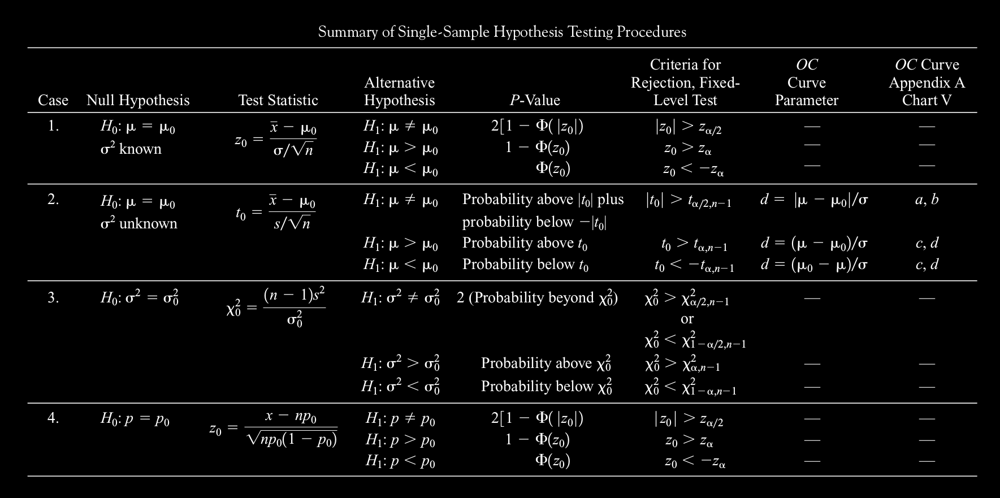

Statistics
Spring 2018
Lecturer: Chih Rung Chen
Ch3. Random variables and Probability Distributions
Random variables
- Definition: A r.v. X is called random if it outcome follows the rule of random.
Ch4. Decision making for single sample
Concept correction
- (From stackoverflow) σ is the population standard deviation, which is generally unknown. Typically, X (a capital letter) represents a value from the population. This is a random variable (it could take any of , typically, many values). A particular value of X is called {x} (lower case) and has a definite value. If you have n different such sample values you might label them x_1,x_2,...,x_n. The average of n values from the population is also a random variable \overline{X} and it in turn might have a particular value for n particular sample values, \overline{x}. Given a random sample average \overline{X}, that sample will have a random sample standard deviation S. A particular value for this random variable for a known sample of n values is then S. The random variable \overline{X} for n sample values has a smaller standard deviation than the original X variable. Its population standard deviation is σ_X¯ = σ \over \sqrt{n} with sample standard deviation s_x¯=s \over\sqrt{n}.
Part3. Hypothesis testing
Set the null Hypothesis
- H_0 is the null hypothesis that the researcher want to overthrow(?) We want to test this one
- H_1 is the alternative hypothesis that the researcher want to gather the proofs and prove it(?) We want to test this one
- We test a null hypothesis that is if there exist a (set) of sample that we can overthrow the null hypothesis and thus choose to support the alternative hypothesis.
- Hypothesis testing parameters: \mu ,p ,\sigma
- Procedure H1 the hypothesis of the researcher(研究者的假說) and for its converse is H0 ()
ex:
工人生產的燈泡壽命小於25000小時(虛無假說與對立假說不能放統計量，因為我們有興趣的是母體\mu而不是樣本\overline{X})
ans:
H_1: \mu_{night} < 25000hrs , and , H_0: \mu_{night} \geq 25000
Check the significance level
- \alpha is the significance level: 虛無假說 就是: 除非有積極證據否則只好接受的假說。 例如 "兩變數無關聯", "兩群體無差異" 之類的都是，型I誤 就是: 當虛無假說是對的時候, 你卻判定它是錯的，顯著水準 就是: 你能允許犯 型I誤 的機率上限。
- Type1 error vs type2 error

- Power of test is if when rejecting H_0 and at the same time H1 is true Power=1 - \beta
-
So the less p-value, the less probability that according to the current result, is less likely to be happen that SUPPOSE (NOTE!! SUPPOSE, NOT THE REAL ONE) H_0 IS TRUE
-
A a small p-value means that the observed result is highly unlikely if the null hypothesis were true. Consequently, we conclude (since we do observe this result) that the null hypothesis is unlikely to be true, and reject it.
- (Self-recognition) the smaller the \alpha is the smaller area that, for example the dual side test error part(outer part) will be, causing the less error probability to reject H_0 which is equivalent to Even though I reject and describe a new stat , ex \mu I still have the less chance to commit error
For example, H_0 says "avg height = 175cm",
\alpha region 1 is \mu \lt 170 \mu \gt 180
and \alpha region 2 is \mu \lt 165 \mu \gt 185
suppose H_0 is true, then region 2 covers LESS area then region 1. This result shows that the sample we observed is further shifted than region 1(亦即，區域二觀測到的數據相較於區域一，更顯外側，代表更偏離虛無假設，棄卻虛無假設的正確率更好，代表棄卻虛無假設犯錯的可性可以降低)
Test statistics
- Point estimator
Decide the rejection region
